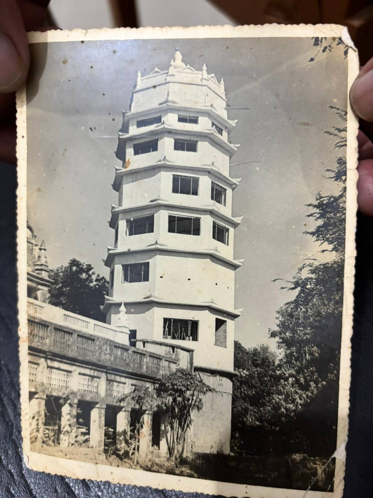
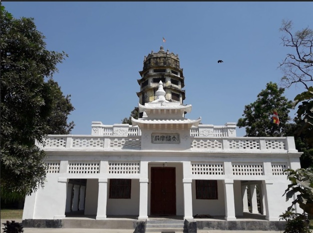

導言
一段願心、護持與重建交織而成的歷史
華光寺的歷史，不只是某一座寺院的興建經過，更是一段近代中印佛教交流、佛陀聖地守護與華人護持力量匯聚的見證。
華光寺所在的舍衛城，是佛陀住世時長期說法的重要聖地。近代以來，仁證法師遠赴印度朝聖，並在聖地中逐步生起為華人僧俗建立道場的願心。從歷史背景、創寺法師到籌建過程，華光寺的形成不只是建築的出現，更是一段願心、護持與重建交織而成的歷史。
一
歷史背景
華光寺的建立，並不只是興建一座寺院，而是近代中印佛教交流的重要見證。當年仁證法師遠赴佛陀聖地舍衛城，看到華人僧俗前來朝聖時缺乏安住禮佛之所，遂發願建寺。這份願心後來獲得中國佛教界與海外華僑護法支持，使華光寺成為連結佛陀聖地與華人佛教信仰的重要據點。
華光寺位於印度舍衛城祇樹給孤獨園附近。對佛教徒而言，舍衛城不只是古代地名，更是佛陀住世時長期說法的重要聖地之一。許多經典中與佛陀弘法有關的重要因緣，都與這片土地緊密相連。因此，對後世佛教徒而言，前往舍衛城朝禮，不只是參觀古蹟，更是一種回到佛法源流之地的朝聖行動。
到了近代，雖然中國內部歷經戰亂與社會動盪，但中國佛教界對印度佛教聖地的關注並未中斷。對許多佛教徒而言，前往印度朝禮佛陀遺跡，不只是個人的遠行，更帶有尋根、護法與延續信仰的意義。也正因如此，真正願意西行朝聖的人，往往承載的不只是個人修行，也是一種時代使命。
當時前往印度聖地的華人僧俗，在當地往往缺乏合適的禮佛、安住與修行空間。也因此，在舍衛城建立一座能夠依漢傳佛教傳統禮佛、掛單與住宿的寺院，成為十分實際而迫切的需要。華光寺的出現，正是回應這樣的因緣。
此外，華光寺的建立也凝聚了中國佛教界與海外華僑、護法居士的支持。尤其新加坡、馬來亞、菲律賓等地善信的護持，讓建寺與後來的重建得以逐步完成。從這個角度來看，華光寺不只是一座寺院，更是一段近代中印佛教交流與華人信仰共同願心的具體見證。

二
創寺法師
仁證法師早年於湖北出家，受戒後行腳參學，精勤修行。1937 年，他發願西行，遠赴印度佛陀聖地舍衛城，在祇樹給孤獨園修行安住。面對華人朝聖者在聖地缺乏禮佛與棲止之所的情況，法師逐漸生起建寺願心，克服異地語言與環境困難，創建華光寺，使其成為華人僧俗朝禮佛陀聖地的重要依止處。

仁證法師，湖北籍，早年於黃陂古潭禪寺出家，於 1931 年披剃受戒。受戒之後，法師並未安於一隅，而是以苦行清修、行腳參學的方式，遍歷名山叢林，鍛鍊志願，也增長見聞。這段早年的修行生活，奠定了他後來遠赴印度朝聖、長住聖地的精神基礎。
到了 1937 年，仁證法師發願西行，前往印度佛教聖地朝禮。當時交通艱難，環境陌生，能夠從中國一路行至印度，本身便需要極大的信心與毅力。法師歷經艱辛，最終抵達舍衛城祇樹給孤獨園。對佛教徒而言，這裡是佛陀住世時長期說法的重要聖地，因此法師來到此地，不僅是個人的朝聖之行，更帶有深刻的尋根與護法意義。
抵達舍衛城後，仁證法師先在聖地安住修行。隨著日久，他不只感受到佛陀聖地的莊嚴與清淨，也逐漸看見一個現實需要：前來朝聖的華人僧俗，在當地缺乏一處能依漢傳佛教傳統禮佛、掛單、安住與修行的地方。於是，原本結廬修行的念頭，慢慢轉化為更深一層的願望——在舍衛城建立一座屬於華人佛教徒的寺院，使來自中國與海外的朝聖者，在佛陀聖地也能有一處安心依止的道場。
然而，在異國聖地建寺，並非易事。當時的仁證法師面對的是人地生疏、語言不通、資源不足的處境。但法師並未因此退卻，而是憑藉堅定願心，逐步爭取各方支持，購地興工，終於完成寺院的初步建設。寺成之後，法師將其命名為「華光寺」，寓意中華僧俗同沐佛光，也象徵這座寺院雖位於印度，卻承載著華人佛教徒對佛陀聖地的共同敬仰。
寺院建成後，華光寺不只是法師個人修行之所，更成為華人朝聖者在舍衛城的重要落腳處。寺內設有大雄寶殿及相關附屬設施，可供禮佛、修行與住宿，因此在當地也被稱為「舍衛城中華寺」。後來寺院曾遭火災焚毀，但仁證法師並未退失道心，而是再度發願重建，並獲得各地善信、護法居士及海外華僑的支持，使寺院得以重新建立。
仁證法師畢生駐錫舍衛城，守護聖地道場，接引前來朝禮的華人信眾。1976 年 10 月 13 日，法師於華光寺圓寂。法師一生從中國出家、發願西行，到終老佛陀聖地，其生命歷程與華光寺的命運緊緊相連。可以說，華光寺的建立，不只是寺院歷史的一頁，更是仁證法師願行精神最具體的見證。
三
籌建過程
華光寺的建立，並非一蹴可幾，而是歷經發願、購地、初建、焚毀與重建的漫長過程。仁證法師初到舍衛城時，原本只是希望結一茅蓬，自修並供僧人掛單；後來在諸方僧俗協助下購地興工，終於建成寺院。其後寺院曾遭火災焚毀，法師又重新發願，並在新加坡、馬來亞、菲律賓等地善信護持下完成重建，使華光寺成為華人佛教徒在舍衛城的重要道場。
華光寺的出現，並不是一開始就以完整寺院的形式建立起來，而是由一位遠赴佛陀聖地的僧人，在修行與朝聖的親身經驗中，逐漸發願、逐步實現的結果。
仁證法師抵達舍衛城祇樹給孤獨園後，深受聖地清淨氛圍所感，最初生起的念頭，是在當地結一茅蓬，作為安住修行之所，同時也能供往來僧人掛單停留。這個最初的想法十分樸實：不是先想建造規模宏大的寺院，而是希望在佛陀聖地，先有一個可以安住修行與接引同道的地方。
隨著在當地安住的時間漸久，仁證法師逐漸看見更深一層的需要。對遠道而來的華人僧俗而言，舍衛城雖是佛陀重要聖地，卻缺乏一處能依漢傳佛教傳統禮佛、修行與住宿的地方。於是，原本的結廬之念，逐漸轉化為正式建寺的願心。
在當時的印度，要完成這件事並不容易。仁證法師身處異地，面對的是人地生疏、語言隔閡與資源有限的現實。但也正是在這樣的處境中，法師的願心得到各方響應。當時有在緬甸與印度弘法的華籍僧人得知後，相與贊助，使法師得以購地興工，逐步完成最初的建寺心願。寺院初步建成後，法師將其命名為「華光」，寓意中華僧俗同沐佛陀慈光。
不幸的是，寺院建成之後曾遭遇火災，幾乎使多年經營毀於一旦。面對這樣的打擊，仁證法師並未放棄，而是在課誦與禪修之餘，再次發願重建。這段歷程，是華光寺歷史中極為關鍵的一頁，也顯示這座寺院的成立，並不是順利平穩地完成，而是經歷了真實的考驗與挫折。
重建過程中，地方官員、四眾弟子與各地護法共同施財協助。此外，仁證法師也曾赴新加坡等地募化，向華人佛教界與僑界說明舍衛城建寺因緣，請求十方善信共襄盛舉。新加坡、馬來亞、菲律賓等地善信的支持，最終使重建工程得以完成。
重建後的華光寺，不只是單一建物，而是包括大雄寶殿、附屬殿堂及相關設施的寺院群。寺院可供華人佛教徒依照漢傳佛教傳統禮佛、修行與住宿，因此也被稱為「舍衛城中華寺」。若從整體歷程來看，華光寺的籌建可以說歷經了發願、建設、焚毀、重建等重要階段，是一座由願心、苦行、募化與跨地域護持共同成就的道場。



四
歷史意義
華光寺見證佛陀聖地中的華人道場如何形成，也見證近代中印佛教交流與十方護持力量的匯聚。
華光寺的歷史，不只是某一位法師的個人行誼，也不只是某一座寺院的建築史。它同時見證了佛陀聖地中的華人道場如何形成，也見證了近代中印佛教交流、華人信眾朝聖需求，以及十方護法與海外華僑共同護持所匯聚成的歷史力量。

結語
願心延續，成就道場
從聖地背景、法師發願到建寺與重建，華光寺呈現的是一段由信仰與護持共同承載的歷史。
從佛陀聖地的歷史背景，到仁證法師的發願，再到華光寺歷經初建、焚毀與重建的過程，這一段歷史所展現的，不只是建築的形成，更是一種願心的延續。華光寺之所以珍貴，正因為它是在艱難時代之中，由信仰、護持與堅定願力共同成就的道場。